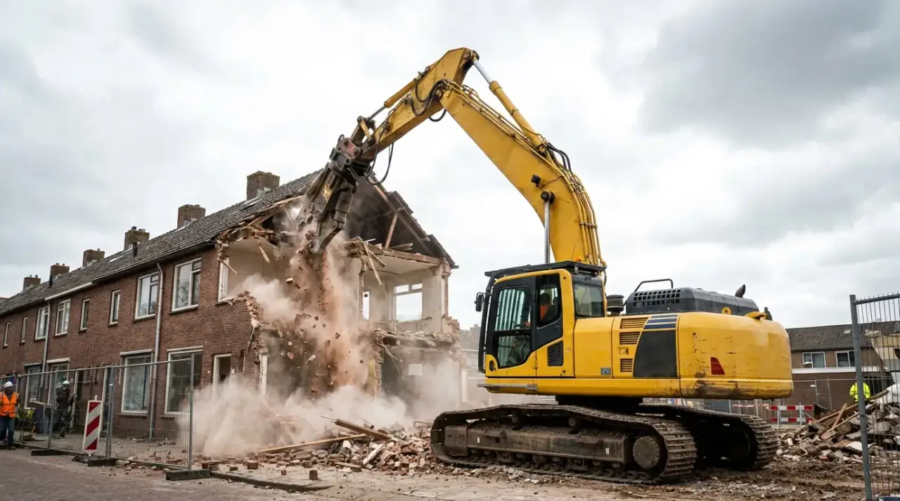
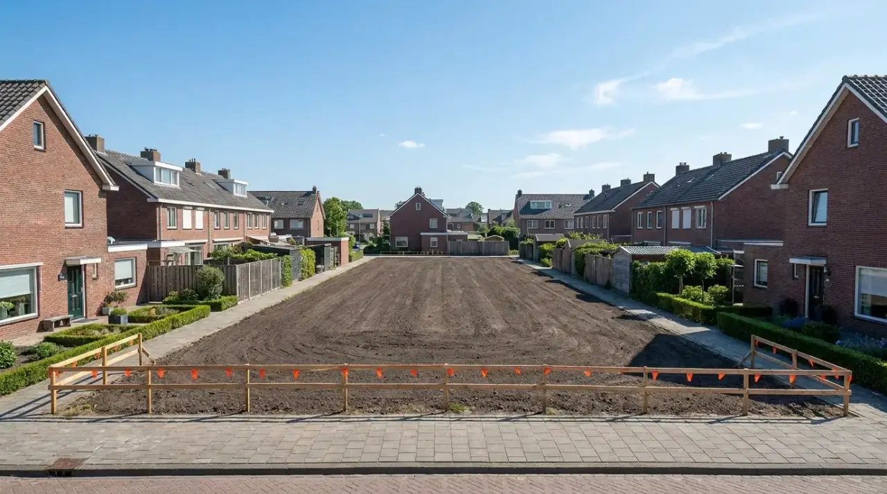

Uitbouw en aanbouw
Een uitbouw of serre slopen: waar je aan denkt voordat de eerste steen eruit gaat
Heeft je huis een uitbouw, serre of aanbouw die er later tegenaan is gezet? Wie die wil vervangen door iets groters of nieuwers, moet eerst het oude deel weghalen. Dat raakt aan meer regels dan je verwacht, en vaak ook aan de buren.

Melden of niet?
Een uitbouw slopen is juridisch het gedeeltelijk slopen van je woning. Of je dat moet melden, hangt af van twee dingen. Zit er asbest in dat eruit moet, dan meld je het altijd, minstens vier weken vooraf, bij de gemeente. Zit er geen asbest in, dan is een melding pas nodig als er naar redelijke schatting meer dan 10 m³ sloopafval vrijkomt.
Reken de hoeveelheid bij een bakstenen uitbouw met een betonvloer, een plat dak en kozijnen vooraf goed uit, en niet te krap; een melding die achteraf nodig bleek, kun je niet meer op tijd doen.
Asbest in een oude aanbouw
Is de uitbouw van voor 1994, dan heb je voor dat deel van het huis een asbestinventarisatie nodig voordat je sloopt. Juist aanbouwen en serres zijn verdachte plekken: bitumen op een plat dak, golfplaten of vlakke platen als dakbeschot of gevelbekleding, kit tussen kozijn en muur, een oude regenpijp. Dat zijn allemaal toepassingen waarin asbest kan zitten. Zekerheid geeft alleen een laboratoriumanalyse van een monster.
Let op het bouwjaar van de uitbouw zelf, niet alleen van het huis. Een huis uit 1965 met een serre uit 2003 heeft voor die serre geen inventarisatie nodig. Andersom kan een uitbouw uit de jaren tachtig tegen een nieuwer huis staan.
De muur die je deelt met de buren
Bij een rijtjeshuis staat de uitbouw vaak tegen of op de erfgrens. Een scheidsmuur die twee gebouwen van verschillende eigenaren gemeen hebben, is wettelijk gemeenschappelijk eigendom: mandelig, heet dat. Dat heeft gevolgen voor de sloop:
- De muur is niet alleen van jou. Onderhoud, schoonmaak en, als het nodig is, vernieuwing komen op kosten van beide eigenaren.
- Iedere mede-eigenaar mag tegen een mandelige muur aanbouwen en er tot de helft van de dikte iets in aanbrengen, zolang de muur daar geen nadeel van heeft. Wat jouw uitbouw ooit in die muur heeft gestoken, moet er dus ook zonder schade weer uit.
- Elke mede-eigenaar moet de ander toegang geven tot de muur.
Staat de uitbouw tegen een muur die alleen van de buren is, dan heb je die mandeligheid niet, maar wel de plicht om hun eigendom niet te beschadigen. Wie sloopt, moet maatregelen nemen tegen gevaar voor aangrenzende gebouwen en tegen beschadiging van zaken op het perceel ernaast.

Werken vanaf het erf van de buren
Soms kun je een uitbouw alleen slopen of de gevel daarna alleen afwerken vanuit de tuin van de buren. Daar heeft de wet iets voor: als het voor werk aan jouw huis noodzakelijk is om tijdelijk het erf van de buren te gebruiken, moeten zij dat toestaan. Wel na behoorlijke kennisgeving, tegen een schadeloosstelling, en niet als zij een zwaarwegende reden hebben om te weigeren of uitstel te vragen. Buren mogen samen ook andere afspraken maken dan de wet. Leg die op papier vast, met data en wat er na afloop hersteld wordt.
Toch een vergunning?
Slopen is op rijksniveau niet vergunningplichtig, maar er zijn uitzonderingen. Is je huis een rijksmonument, dan is de uitbouw meestal mee beschermd, ook als die pas na de aanwijzing is gebouwd, en dan heb je voor het weghalen een omgevingsvergunning nodig. In een beschermd stads- of dorpsgezicht en waar het omgevingsplan eigen sloopregels heeft, kan dat ook. Kijk het na in het Omgevingsloket voordat je de melding doet.
Na de sloop blijft er een gat of een kale muur achter. Het dichtmaken of opnieuw afwerken daarvan valt onder bouwen. Sommige onderdelen, zoals een kozijn of stucwerk, zijn voor de technische regels vergunningvrij, maar raak je de draagconstructie, dan niet. En als er direct een nieuwe uitbouw komt, heb je voor dat bouwdeel sowieso eigen regels.
Volgorde voor een uitbouw
- Bouwjaar van de uitbouw vaststellen en zo nodig asbest laten inventariseren.
- Met de buren praten: over de gemeenschappelijke muur, de toegang tot hun tuin en de planning.
- In het Omgevingsloket nagaan of er een vergunning nodig is, en zo nodig melden.
- Asbest eerst laten verwijderen, daarna de sloop zelf.
- De gevel of muur dichtmaken, of de nieuwe aanbouw plaatsen.
Voor de laatste weken voor de sloop, van meters tot buren en papieren op de bouwplaats, staat er een aparte checklist voor de sloopdag. Wil je een oude uitbouw laten weghalen zonder zelf alle partijen te zoeken, dan kan Sloopregie dat voor je regelen met gecertificeerde bedrijven uit de regio.
Bronnen
- Besluit bouwwerken leefomgeving, art. 2.27, 7.4, 7.9, 7.10 en 7.15 (vergunningvrije onderdelen, zorgplicht aangrenzend perceel, inventarisatieplicht, melding, belendingen), geraadpleegd 25-10-2026
- IPLO, Meldingsplicht sloopactiviteit en Sloopactiviteit
- Burgerlijk Wetboek Boek 5, art. 5:56, 5:62, 5:64, 5:65 en 5:67 (tijdelijk gebruik buurerf, mandelige scheidsmuur, toegang, kosten, aanbouwen)
- IPLO, Vergunningvrije erf- en perceelafscheidingen (buren mogen andere afspraken maken)
- Milieu Centraal, Asbest in en om het huis (bitumen, golfplaten, kit, regenpijpen, dakbeschot)
- IPLO, Toepassing van asbest in Nederland (alleen een laboratorium geeft zekerheid)
- Rijksdienst voor het Cultureel Erfgoed, Leeswijzer monumentenregister (uitbouw ook beschermd na aanwijzing)
- Invoeringswet Omgevingswet, art. 4.35 (sloopvergunning in beschermd stads- of dorpsgezicht)